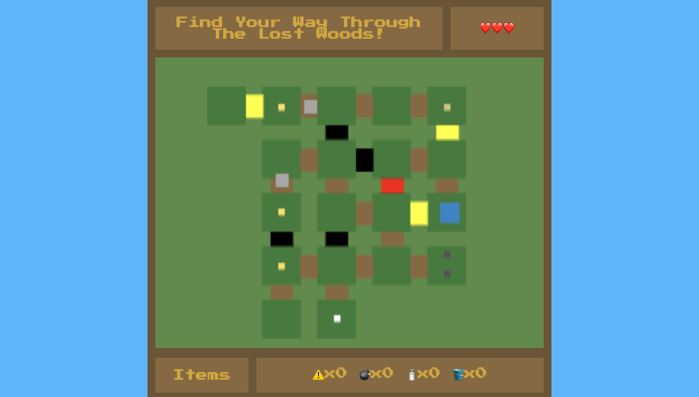

Lost Woods Maze
STORY: Your childhood friend Saria is in danger! She's at the forest temple up North fighting alone. You must slash, blast and harness the true power of the Triforce to save your dear friend before it's too late!
CONTROLS: Navigate through the maze using the WASD keys.
ITEMS GUIDE:
⚠️: Triforce Pieces help you through places with a lot of dark presence.
💣: Bombs allow you to explode your way into places that were previously blocked by giant boulders.
🧂: Goron Spice is mined straight from the caverns of Death Mountain, it's great for cooking.
🪣: Zora Spring Water is the cleanest water in Hyrule, it's very refreshing and rejuvinating.
📯: The Fairy Ocarina is a flute-like instrument that's really popular with forest folk.
ENEMIES & ENTITIES GUIDE:
🟤: Skull Kids were once children but got lost in these woods, they are generally friendly and like to trade but don't make them mad, you'll die instantly.
🔴: Deku Scrubs were greedy adults who sought the power of the Triforce, the gods punished them and now they're forced to live as monsters. They deal 1 heart of damage.
🟠: Deku Babas are Venus Flytraps that mutated due to the surrounding malice, they shoot seeds from a distance dealing a half heart worth of damage
CURRENT STRETCH GOALS:
- [ ] Implement health system
- [ ] Add enemy movements and projectile attacks
- [ ] Add player projectile attacks
- [ ] Add warp function for black bridges
- [ ] Autoplay music
- [ ] Game over and game winning screen
- [ ] Pause feature
- [ ] Item trade function
- [ ] Movement restriction for out of bounds area